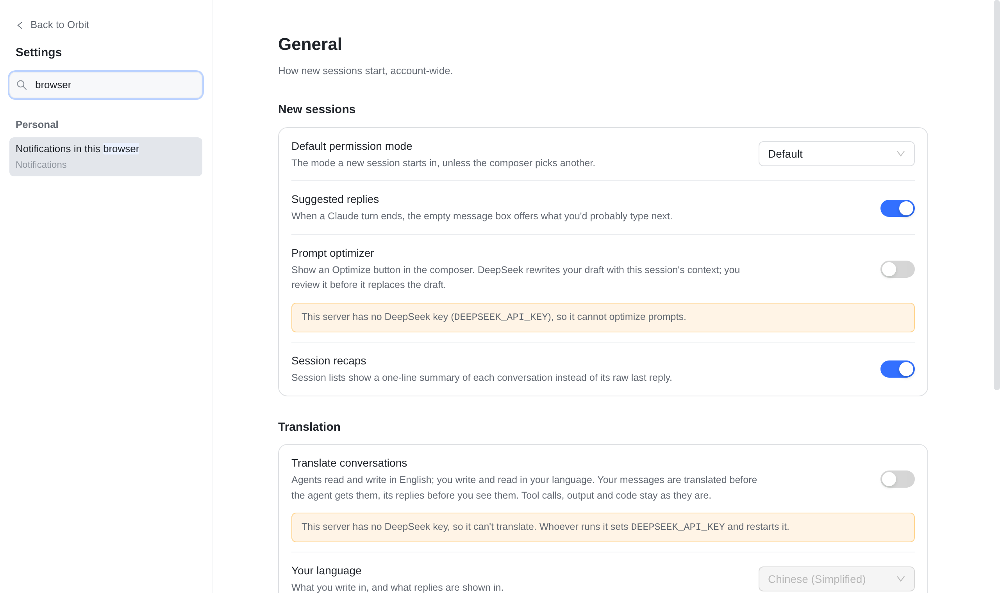
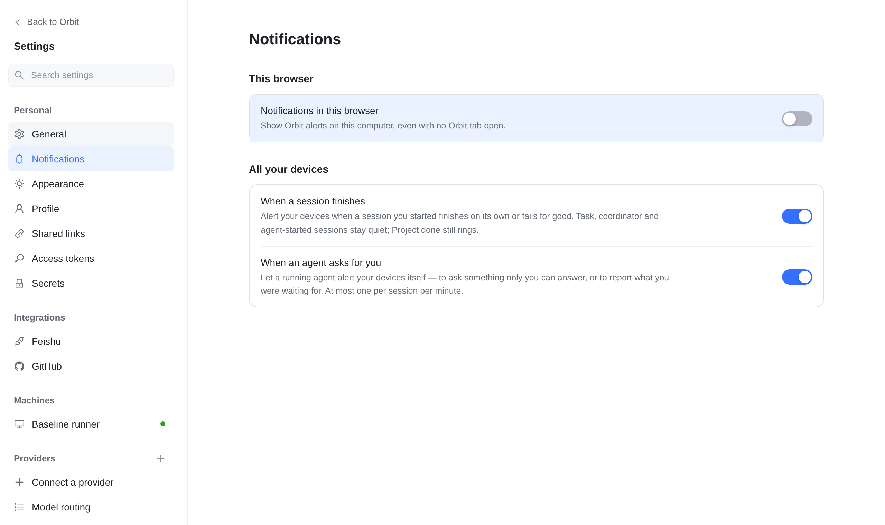
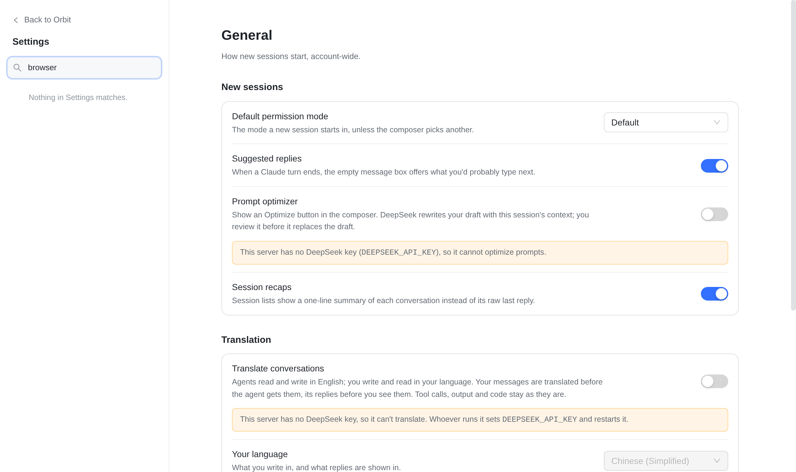
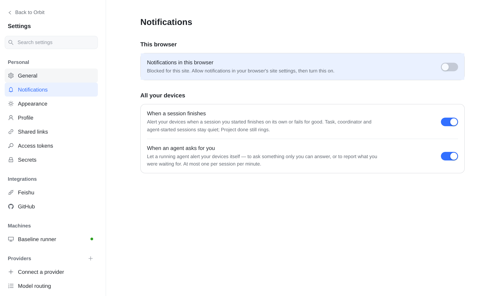

当前分支构建的真实 Web，假数据（ui-migration fixtures），1280×760 @2x。搜索 “browser” / “notifications” / “alerts” 都能找到这一行。

Personal 组里出现「Notifications in this browser」，第二行是它所在的页面 Notifications。跟其它设置行同一个样式，没有新外观。

跳到 Notifications，滚到这一行并闪一下（跟其它搜索结果一样）。浏览器还没被问过权限时，开关是关的，说明文字是默认那句。

比如还没配密钥的自建部署：页面上没有这一行，搜索也就不列它，不会把人带到一个找不到的地方。

开关变灰，说明文字告诉他去浏览器的站点设置里改。